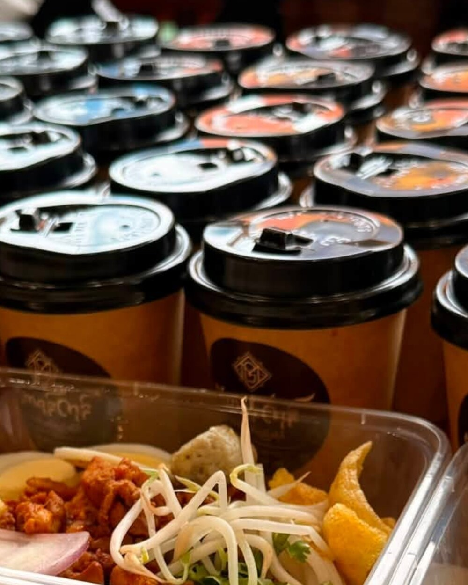
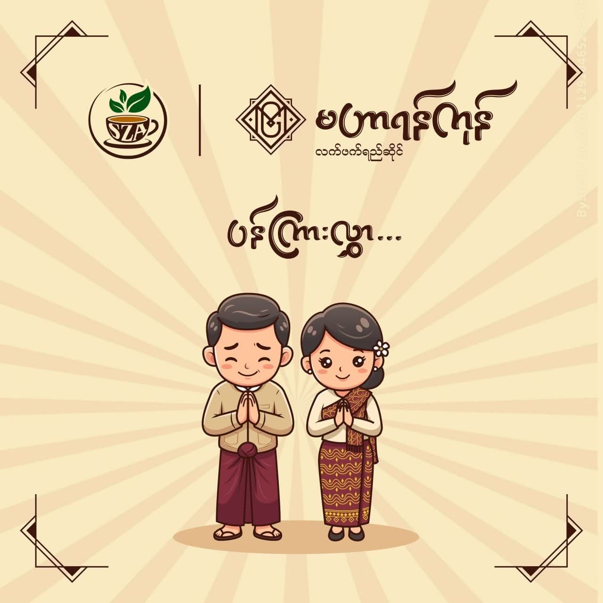
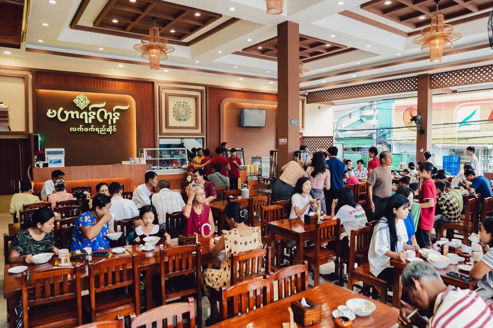
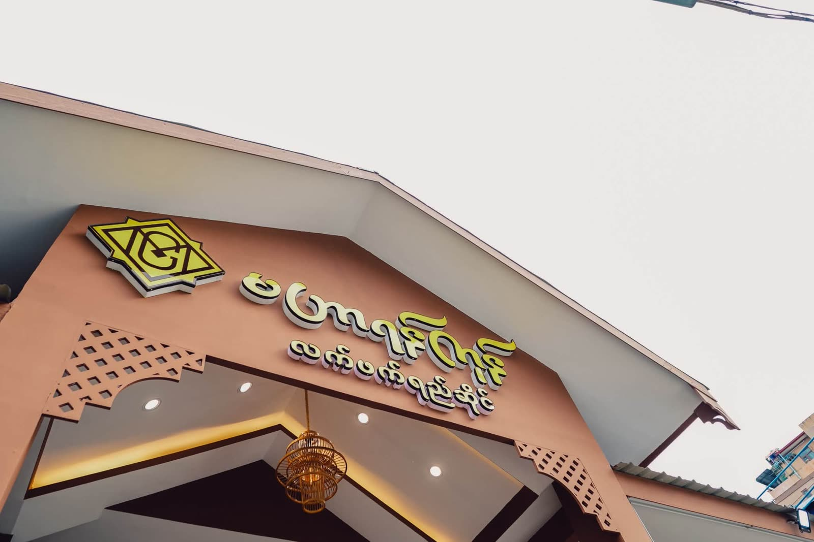
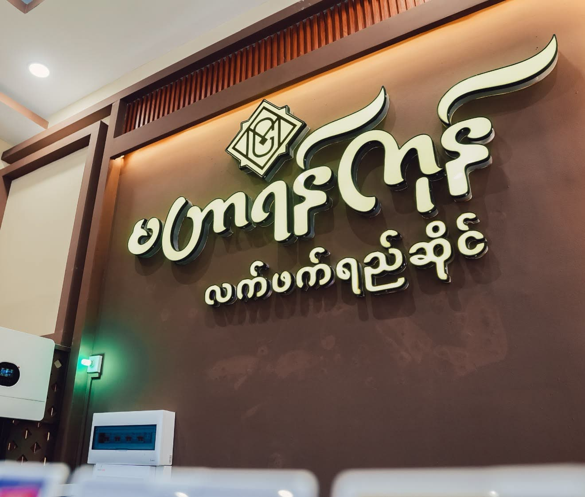
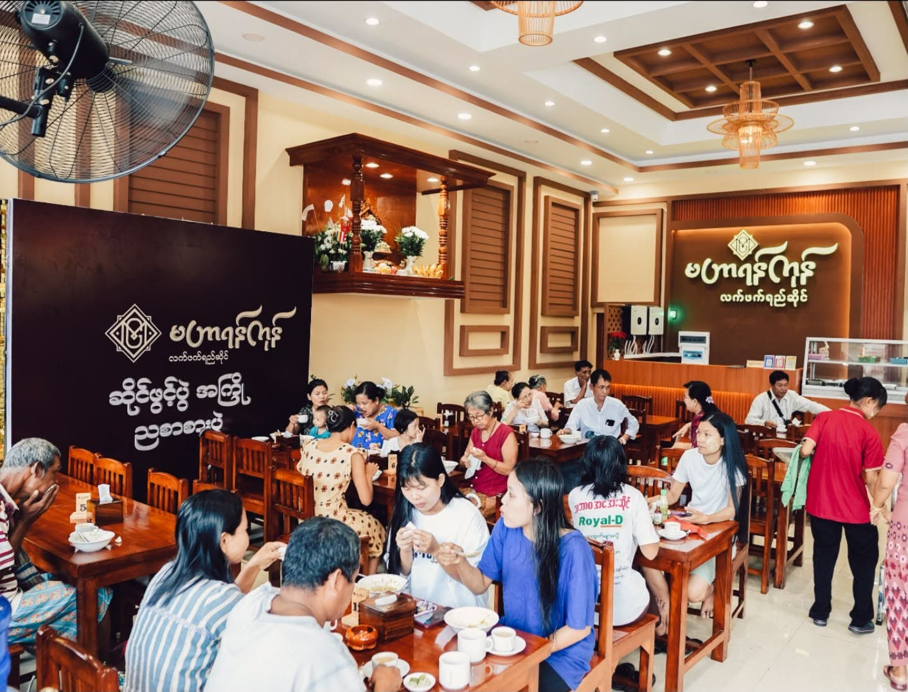
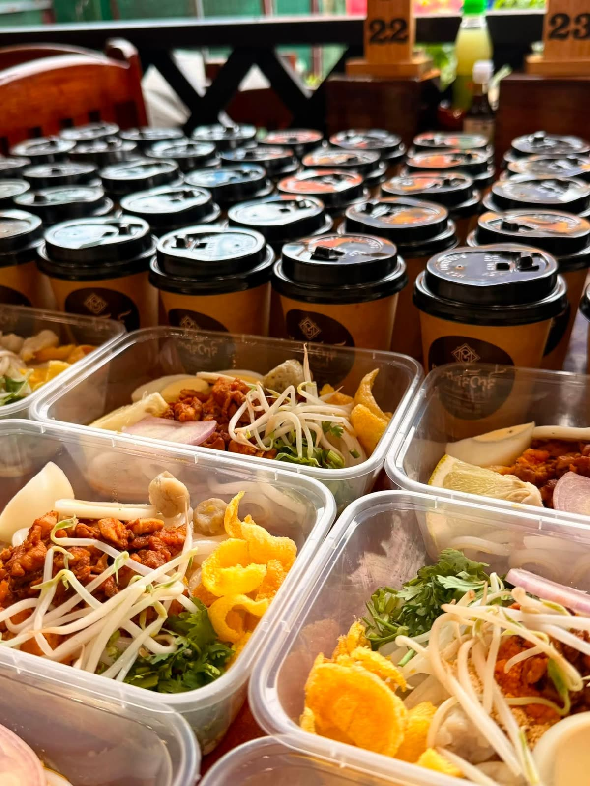
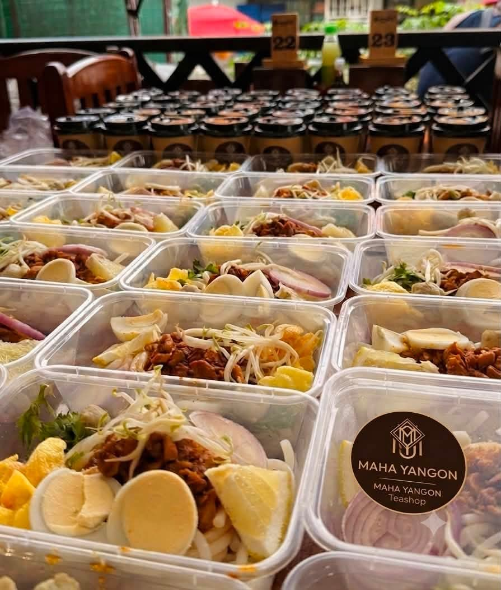
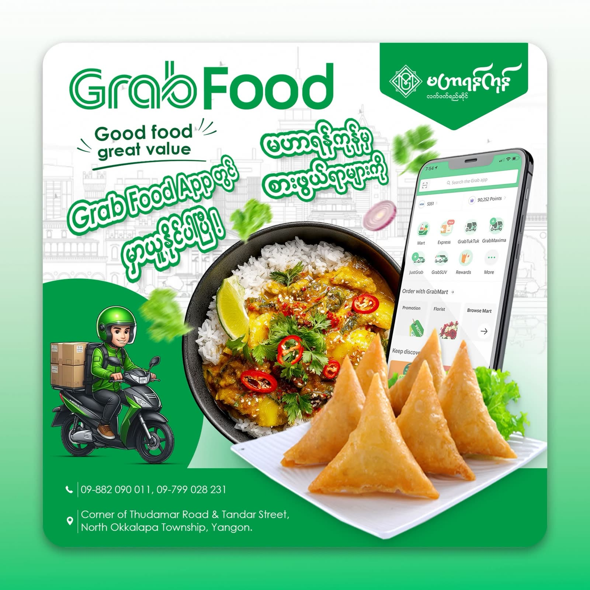

လက်ဖက်ရည်Laphet Yay · Myanmar milk tea
ချိုဆိမ့်၊ ပေါ့ချို၊ ကျောက်ကျော — ကြိုက်နှစ်သက်ရာ အချိုအဆိမ့် ပြောပြလိုက်ပါ။Sweet, medium or light — say the word and it’s poured your way.
ဆိုင်၏ အသက်The house classicမိသားစုတစ်စုလို ဂရုစိုက်ပြီး၊ အစဉ်အလာအရသာကို မဖောက်ပြန်စေဘဲ — ၂၀၀၉ ခုနှစ်ကတည်းက မြောက်ဥက္ကလာပတွင် ကြွရောက်လာသူတိုင်းကို နွေးထွေးစွာ ဖိတ်ခေါ်နေပါသည်။ Family-run, fiercely traditional, and open-armed to everyone who walks in — pouring North Okkalapa’s favourite laphet yay since 2009.

မင်္ဂလာပါ·Mingalaba
မဟာရန်ကုန် လက်ဖက်ရည်ဆိုင်သည် ၂၀၀၉ ခုနှစ်ကတည်းက မြောက်ဥက္ကလာပ သုဓမ္မာလမ်းနှင့် သန္တာလမ်းထောင့်တွင် တည်ရှိပါသည်။ မနက်စောစော အလုပ်သွားမည့်သူများ၊ ကျောင်းသား/ကျောင်းသူများ၊ မိသားစုများနှင့် ရပ်ကွက်ထဲက အဘိုးအဘွားများအတွက် နေ့စဉ် စုဆုံရာနေရာ ဖြစ်ပါသည်။Mahar Yangon Teashop has stood on the corner of Thudamar Road and Tandar Street in North Okkalapa since 2009. Every morning it fills with people on their way to work, students, whole families, and the grandparents of the neighbourhood — the way a Yangon teashop should.
ကျွန်ုပ်တို့၏ လက်ဖက်ရည်ကို နေ့စဉ် အသစ်ဖျော်ပါသည်။ စမူဆာများကို လက်ဖြင့် ခေါက်ပြီး အော်ဒါလာမှ ကြော်ပါသည်။ ဟင်းလျာများကို အိမ်တွင်း ချက်နည်းအတိုင်း ချက်ပြုတ်ပါသည်။ လာရောက်သူတိုင်းကို မိသားစုတစ်ဦးလို ဆက်ဆံပါသည် — ဒါက ကျွန်ုပ်တို့ရဲ့ အဓိကအချက်ပါ။Our tea is brewed fresh through the day. Our samusas are folded by hand and fried to order. Our curries are cooked the way they are cooked at home. And everybody who sits down is treated like family — that part matters most to us.
လက်ဖက်ရည် အမြဲနွေးနွေး၊ အမြဲသစ်လွင်Never stewed, never yesterday’s pot
ထိုင်ပြီး တစ်မိနစ်အတွင်း လက်ဖက်ရည် ရောက်ပါစေTea on your table almost before you sit
၂၀၀၉ ကတည်းက တစ်မိသားစုတည်း ကိုင်တွယ်Same family, same recipes, since 2009
GrabFood တွင်လည်း မှာယူနိုင်ပါပြီOrder in-store, by phone or on GrabFood
ဗီဒီယိုများ·From our TikTok
အသံဖွင့်ရန် ဗီဒီယိုကို နှိပ်ပါ။ ဘေးသို့ ပွတ်ဆွဲကြည့်ပါ။Tap a reel to play with sound. Swipe for more.
ဓာတ်ပုံများ·Gallery







အလှူ & ပွဲလမ်း·Catering & donations
ရပ်ကွက်အလှူ၊ ဆွမ်းလောင်းပွဲ၊ ရုံးပွဲ၊ မွေးနေ့ပွဲ သို့မဟုတ် ဆေးရုံလှူဒါန်းမှုများအတွက် အစားအစာ အထုပ်များကို လိုအပ်သည့် အရေအတွက်အတိုင်း ပြင်ဆင်ပေးပါသည်။ တစ်ထုပ်ချင်းစီကို လတ်ဆတ်စွာ ထုပ်ပိုးပြီး၊ ဆိုင်၏တံဆိပ်ဖြင့် ပိတ်ပေးပါသည်။Neighbourhood alms offerings, monastery donations, office lunches, birthdays or hospital drives — we pack meal boxes in whatever quantity you need. Every box is packed fresh and sealed with our own stamp.
အရေအတွက်များပါက ကြိုတင် ဖုန်းဆက်ပါ။ ကျွန်ုပ်တို့ဘက်မှ ကူညီစီစဉ်ပေးပါမည်။Ringing a day ahead helps for larger orders — we’ll take care of the rest.
လာရောက်လည်ပတ်ရန်·Visit us
သုဓမ္မာလမ်းနှင့် သန္တာလမ်းထောင့်၊ သန္တာမှတ်တိုင်ရှေ့၊ မြောက်ဥက္ကလာပမြို့နယ်၊ ရန်ကုန်။Corner of Thudamar Road & Tandar Street, in front of Thandar bus stop, North Okkalapa Township, Yangon.
Google Maps တွင် ဖွင့်ရန် →Open in Google Maps → 📞 ဖုန်းနံပါတ်Phone09-882 090 011
09-799 028 231
maharyangon.ygn.nok@gmail.com
စာပို့ရန် →Send a message →နေ့စဉ် ဖွင့်လှစ်ပါသည်။ ယနေ့ ဖွင့်ချိန်အတိအကျကို ဖုန်းဖြင့် စုံစမ်းနိုင်ပါသည်။Open daily. Give us a ring for today’s exact hours.
ဖွင့်ချိန် မေးမြန်းရန် →Ask about hours →GrabFood App တွင် “မဟာရန်ကုန်” ဟု ရှာဖွေပြီး မှာယူနိုင်ပါသည်။Search “Mahar Yangon” in the GrabFood app to order.
GrabFood ဖွင့်ရန် →Open GrabFood → 🎬 လူမှုကွန်ရက်Follow along@maharyangon.teashop.nok
TikTok & Facebook →TikTok & Facebook →